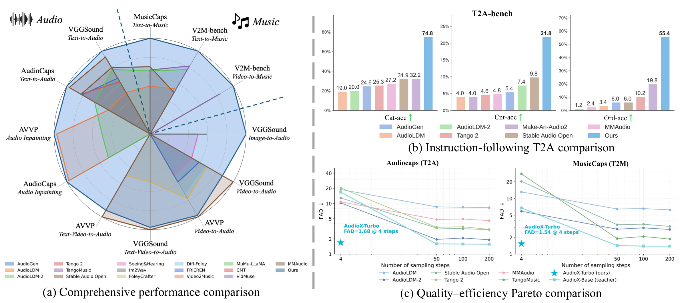
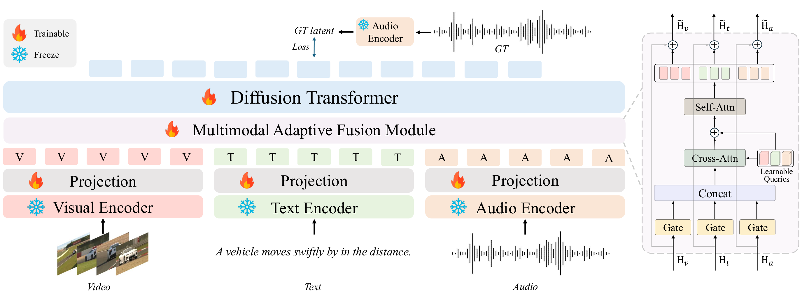
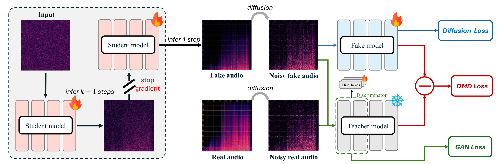

Performance comparison of AudioX-Turbo against baselines. (a) Comprehensive comparison across multiple benchmarks via Inception Score. (b) Results on instruction-following benchmarks. (c) Quality–efficiency trade-off across diffusion-based methods.
Audio and music generation based on flexible multimodal control signals is a widely applicable topic, with the following key challenges: 1) a unified multimodal modeling framework, 2) large-scale, high-quality training data, and 3) the prohibitive inference cost of multi-step diffusion sampling. As such, we propose AudioX-Turbo, a unified and efficient framework for anything-to-audio generation that integrates varied multimodal conditions (i.e., text, video, and audio signals). AudioX-Turbo follows a teacher–student paradigm. The teacher AudioX-Base is built on a Multimodal Diffusion Transformer with a Multimodal Adaptive Fusion module that aligns diverse multimodal inputs for high-fidelity synthesis, and is then distilled into the few-step student AudioX-Turbo via Distribution Matching Distillation adapted to flow matching, complemented by a diffusion-based discriminator for high-quality few-step generation. To support training, we construct a large-scale, high-quality dataset, IF-caps-Pro, comprising approximately 9.2M samples curated through a two-stage data collection and annotation pipeline. We benchmark AudioX-Turbo across a wide range of tasks, finding that our model achieves superior performance, especially on text-to-audio and text-to-music generation, while operating at only 4 sampling steps and requiring up to ~25× fewer function evaluations (NFE) than multi-step baselines. These results demonstrate that our method is capable of audio generation under flexible multimodal control, showing efficient and powerful instruction-following capabilities.

Performance comparison of AudioX-Turbo against baselines. (a) Comprehensive comparison across multiple benchmarks via Inception Score. (b) Results on instruction-following benchmarks. (c) Quality–efficiency trade-off across diffusion-based methods.

The AudioX-Turbo framework: a flow-matching teacher (AudioX-Base) is distilled into a few-step student (AudioX-Turbo) via Distribution Matching Distillation.

The AudioX-Turbo acceleration framework. The student model is rolled out for k−1 steps to obtain an intermediate latent state, and a final one-step prediction produces the estimated clean target, which corresponds to the fake audio branch. Real and fake latents are diffused to matched noise levels and supervised by three complementary objectives: a flow-matching DMD loss between the frozen teacher and the auxiliary fake model, a diffusion loss for updating the fake model on the student's generated distribution, and an adversarial GAN loss from the diffusion-based discriminator. Gradients are stopped through the rollout history and the frozen teacher branch.
If you find our work useful, please consider citing:
@article{tian2026audioxturbo,
title={AudioX-Turbo: A Unified Framework for Efficient Anything-to-Audio Generation},
author={Tian, Zeyue and Ke, Lei and Liu, Zhaoyang and Yuan, Ruibin and Xue, Liumeng and Yang, Yujiu and Chen, Weijia and Tan, Xu and Chen, Qifeng and Xue, Wei and Guo, Yike},
journal={arXiv preprint arXiv:2606.12555},
year={2026}
}